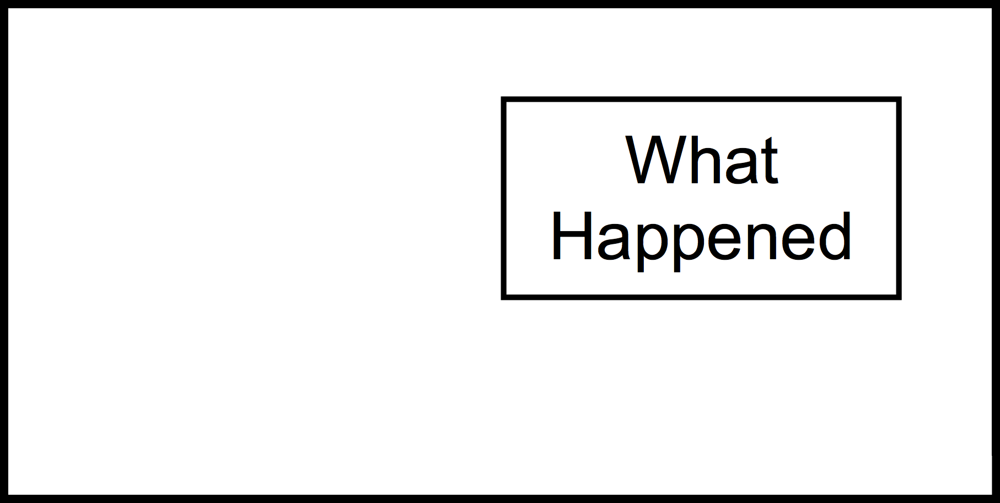
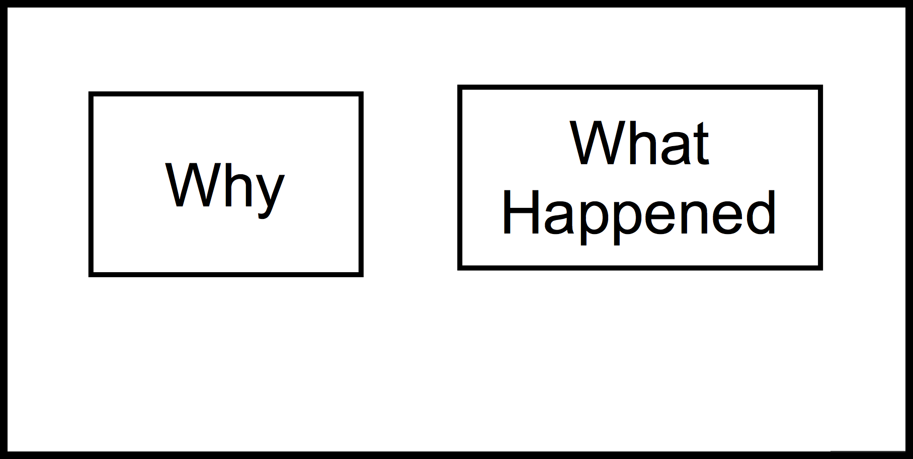
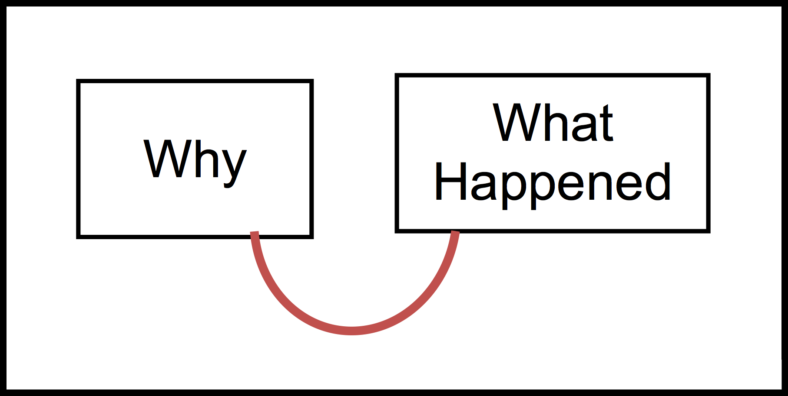

Objectives: Upon completion of the following lesson students will be able to:
Identify events in a narrative (primary)
Identify simple causes and events (primary)
Recall/retell text using graphic organizers (build working memory strategies) (secondary)
Materials Needed:
Base Appendix Folders (in Teacher Box):
Sample Procedure Cards (Causal Connections, Goals/Tries/Outcomes, Inference) (see Base Appendix, pp. 1-3)
Identifying Causes and Events Anchor Chart (for reference only, Base Appendix, p. 4)
Student Goal/Try/Outcome Cards (on tablet or actual cards, see Base Appendix, p. 5)
Goal/Try/Outcome Anchor Chart (Base Appendix, p. 6)
How to Place Cards on Goal/Causal Connections Organizer (Base Appendix, p. 7)
Blank Goal/Causal Organizer (Base Appendix, p. 8)
Outcome Prompt Flowchart (Base Appendix, p. 9)
Inference Anchor Chart (Base Appendix, p. 10)
Inference Prompts (Base Appendix, p. 11)
You Do It Together Conversation Starters and Prompts for Small Group Practice (Base Appendix, p. 12)
Small Group Practice Chart (Base Appendix, pp. 13-15)
Gestures Instruction Sheets (for reference only, Base Appendix, pp. 16-17)
Directed Movement Activities (Base Appendix, pp. 18-24) (laminated copies)
Green folder for teacher with Student Evaluation Script (Base Appendix, pp. 25-45)
Green folders with laminated student evaluation chart (6) (Base Appendix, p. 45)
Lesson 1 Appendix (To be printed):
Balloon Popping Mastery Sheet (Lesson 1 Appendix, p. 1)
Lesson 1 Magician Narrative Mastery Sheet (Lesson 1 Appendix, p. 2)
8 Balloons Causal Mastery Sheet (Lesson 1 Appendix, p. 3)
Student Evaluation Record Sheet (make 2 copies) (Lesson 1 Appendix, pp. 4-5)
Refrigerator Sheet to send home (make 6 color copies) (Lesson 1 Appendix, p. 6)
Technology:
Laptop
Teacher Tablets (2); Student Tablet on Demo Mode (1)
Student Tablets (6)
Teacher Box:
Name Tags (8)
Pens (3)
Plastic Cups (6)
Apron
Sharpie
Paperclips
Small Sticky Notes (assorted colors) (6 pads)
Chart Marker
Stickers
Chips for Green Folders (6)
Wet Erase Markers (3)
O-Rings
Wikki Stix
Velcro Boards (4)
Story Creation Bags (set of 12)
Example Bag (1 goal card, 1 try card, 1 outcome fail card, 1 outcome yes card, 1 because card, and 1 because string)
Role Cards (2 sets; I Do, I Help, I Watch, You Do Together, You Help, You Watch)
Role Charts (set of 2)
Procedure Cards (8 sets; 1 goal card, 1 try card, 1 outcome yes card, 1 outcome fail card, 1 procedure card)
Small Group Practice Flip Charts (2)
Videos/PowerPoints Needed:
Video: 8 Balloons by Shel Silverstein (1 copy)
Pre-Printed Cards (in Lesson 1 Box):
Lesson 1 Intro: Balloon Popping
Lesson 1 Magician Narrative
Lesson 1- 8 Balloons
Boards from Previous Lesson(s):
None
Additional Materials and Props (in Lesson 1 Box):
Blank chart paper for recording rules
Roll of Velcro fabric to use with 8 Balloons activity
2 non-helium balloons (2 will be for explicit instruction)
8 helium-filled balloons (8 will be for use with 8 Balloons video)
8 Balloons foam boards with pictures from video (8)
8 helium-filled balloons (for use in the magician narrative)
Pin
Pencil
Magician Materials (in Magician Box: Retrieved by Magician):
Magician Hat
Cape
Wand
Rabbit
Lesson 1
1. Introduction (2 min.)
[Introduce each other then . . .]
Say: “The purpose of our group will be to learn to understand stories better. First, we will learn how to identify events in stories and what causes those events.”
Materials for Part 2: Establishing Rules
Blank chart paper for recording rules
Chart markers
6 pads of small sticky notes, each a different color (Put each student’s initials on different color sticky notes prior to beginning the lesson)
2. Establishing Rules (5 min.)
[Use the script below to establish rules. Be sure that students understand the consequences of not following rules (losing a sticky note and potentially not being able to get a toy at the end of the lesson if they don’t have all of the sticky notes with their initials on it)]
Treat Others with Respect (This means: no teasing, no hitting, no pushing or shoving, don’t hurt others, don’t hurt others’ feelings, no laughing, no name calling, no interrupting, no talking back, noncompliance, etc.)
Don’t Disrupt the Group (Raise your hand to talk)
Participate/Contribute
Say Something Nice (encourage other kids in your group, compliment each other)
Stay on Task
Follow Directions
Materials for Part 3: Explicit Instruction
Procedure cards (1 for each child, 1 for each teacher)
Balloon Popping Mastery Sheet (Lesson 1 Appendix, p. 1)
Pre-printed cards: Lesson 1 Intro: Balloon Popping (build together on Velcro board during lesson)
Velcro board
Wet erase marker
Wikki stix
Pin
Pencil
2 non-helium balloons
3. Explicit Instruction: Introduction/Concrete Activity (25 min)
[Use the script below introduce student/teacher roles indicating that for this part of the lesson we will be engaging in “I Do/You Watch” roles.]
Say: “When we start an activity I will let you know what I will be doing, and what you should be doing. We will call them teacher roles and student roles. We will place the teacher role and student role on our Roles Chart to help us remember what we should be doing. Today, we will begin with ‘I Do/You Watch.’ [Place these roles onto the Roles Chart.] Sometimes when we are working together, it will be my turn to talk. We will call this time: ‘I Do/You Watch,’ meaning it is my time to teach you and your time to learn.” [Point to the “I Do/You Watch” on the Roles Chart.]
Say: “When it is time for ‘I Do/You Watch,’ I will be the only one talking. I may read a story or watch a video and tell you what I’m thinking inside my head so that I can teach you how to do it. When it is ‘I Do/You Watch,’ you should be listening; you should be actively listening and thinking inside your head, trying hard to learn what I am teaching you. The only talking that you will do is if you are confused or don’t understand, you should ask questions to help you learn what we are doing.”
Say: “So, this means during ‘I Do/You Watch’ you will be listening with your ears, [point to ears and have students do with you] watching with your eyes, [point to eyes and have students do with you] thinking with your brain, [point to brain and have students do with you] and at the end raising with your hand [raise your hand and have students do with you] if you have any questions.” [see Gestures for Explaining Roles in Base Appendix, p. 16.]
Say: “Today we will be learning about causes in stories. We will look at events in stories and think about what causes those events to happen.”
Say: “The things that happen in stories are called events. To figure out what an event is we can ask ourselves ‘What happened?’” [make “what happened” gesture, see Base Appendix, p. 16.] in a story and the answer is an event.
[Hand out procedure cards to students and yourself.]
Say: “You can use this card to help you remember what an event is.” Point to the event box and the definition on your procedure card. “Events are things that happen in a story.” Explain that we will be getting to the other information on the card later.
Say: “In addition to figuring out WHAT HAPPENED, we have to also figure out WHY things happened or what caused something to happen. Sometimes events cause other events to happen and we can connect those two events. To figure out what caused an event to happen we can ask ourselves, ‘Why did it happen?’” [make “why” gesture, see Base Appendix, p. 16.] and the answer will be the cause.
[Point to the cause box and the definition on your procedure card.]
Say: “A cause is also an EVENT, but it is an event that explains WHY something happened in a story. If you forget what a cause is you can use this card to help you remember.”
Say: “In order to identify the events and the causal connections between them in a story we must first read, watch, or listen to part of the story.”
Say: “Then, in order to identify an event that happened in the story, we have to think: What happened?” [make “what happened” gesture, see Base Appendix, p. 16.]
Say: “Then we go back and reread or review that event to find if another event caused it to happen.”
Say: “Then we think: Why did it happen? What other event made it happen?” [make “why” gesture, see Base Appendix, p. 16.]
Say: “Let’s practice identifying events and causes by popping a balloon.”
[Demonstrate/model identifying events and causes by blowing up a balloon, tying it off, and then popping it with a pin. (Give students a warning before popping the balloon.)]
Ask: “What happened?” [make “what happened” gesture, see Base Appendix, p. 16.]
Now say: “The balloon popped.”
Co-teacher places the card that says [The balloon popped] on the Velcro board.
Ask: “Why did that happen?” [make “why” gesture, see Base Appendix, p. 16.]
Now say: “BECAUSE I stuck it with a pin.”
Co-teacher places the card that says [BECAUSE I stuck it with a pin] on the Velcro board.
Say: “We are going to call these special strings BECAUSE strings. We will use them to show connections in the story.”
[Show because string/Wikki Stix]
Say: “We can connect the WHAT HAPPENED event to its CAUSE. In our example the balloon popped. That is what happened. To figure out what caused the balloon to pop we ask, ‘Why did the balloon pop?’ The cause is, BECAUSE I stuck it with a pin. I can connect what happened to its cause using this BECAUSE string.”
[Connect the event cards using the Wikki Stix (BECAUSE string)]
[Restate Cause and Event]:
Say: “When I retell a connection, I can retell what happened by restating WHAT HAPPENED and WHAT CAUSED it to happen. I connect them by moving my finger along the because string as I say the word BECAUSE. This helps me understand the connection. I can also move my finger the other way on the because string as I say WHICH CAUSED. The balloon popped BECAUSE I stuck it with a pin.” [Point to the second event (the balloon popped) and move finger along because string to the initiating event/cause (I stuck it with a pin) while restating the connection (Make sweeping finger move)]
[Explain to students that we will now be switching to “I Do/You Help.”]
Say: “We are now going to switch to a different role. We will call it ‘I Do/You Help.’ [Place these roles onto the Roles Chart.] Sometimes when we are working together, once I think that you are getting the hang of it, I will give you a chance to help me out. We will call this time: ‘I Do/You Help’.” [Point to the “I Do/You Help” on the Roles Chart.]
Say: “When it is time for ‘I Do/You Help,’ I will still be teaching, but you will be able to participate by offering your ideas or helping me figure out the answers. You should still be listening with your ears, [point to ears] watching with your eyes, [point to eyes and have students do with you] and thinking with your brain. [point to brain and have students do with you] When you have something to add you can let me know by raising your hand. [raise hand and have students do with you] This will help you think and learn the information by participating more—it will also help me to know what you understand and what you still need help on.” [Use Gestures for Explaining Roles in Base Appendix, p. 16.]
[Ask students to restate the causal connection and do the finger move along with you chorally.]
Say: “Now say it again with me. First, I retell WHAT HAPPENED. What happened?” [make “what happened” gesture, see Base Appendix, p. 16.]
[Students respond chorally with you] “The balloon popped.”
Say: “Then I say what CAUSED it to happen, BECAUSE I stuck it with a pin.” [make sweeping finger movement in air, see Base Appendix, p. 17.]
Say: “I can also explain the causal connection a different way. Sometimes you can just retell the story without asking a question. When I retell the story this way I say the CAUSE first, ‘I stuck the balloon with a pin, WHICH CAUSED [move finger from the causal event to the event along the wikki stick] the balloon to pop.’”
Say: “Let’s look at our procedure card.”
[Point to the diagram of the simple cause on the procedure card.]
Say: “Here I see two events that are connected with a line. This looks a lot like our board! What this picture is telling me is that the first event [point to first box] caused [trace line with finger] the second event [point to second box] to happen, just like sticking the balloon with a pin [point to first box] caused [trace line with finger] the balloon to pop. If you forget what a cause is you can use this card to help you remember.”
Say: “Let’s try another way to pop the balloon. I’m going to sit on it.”
[Demonstrate by sitting on the balloon. Balloon does NOT pop.]
Ask: “What happened?” [make “what happened” gesture, see Base Appendix, p. 16.]
Co-teacher places the card that says [The balloon did NOT pop] to the right on the board.
Ask: “Why did that happen?” [make “why” gesture, see Base Appendix, p. 16.]
Co-teacher places the event card that says [BECAUSE I sat on it and sitting on it didn’t work] to the left of the what happened card on the board.
Say: “I’m going to use my BECAUSE string again to show the connection in this story.”
[Connect events using wikki stix BECAUSE string.]
[Restate Cause and Event]:
“So why didn’t the balloon pop? BECAUSE sitting on it didn’t work.” [make sweeping finger movement in air, see Base Appendix, p. 17.]
Say: “The balloon did NOT pop BECAUSE [Use finger move as you restate the connection] sitting on it didn’t work.”
[Ask students to restate the causal connection and do the finger move along with you chorally.]
Say: “Now say it again with me. First, I retell WHAT HAPPENED. What happened?” [make “what happened” gesture, see Base Appendix, p. 16.]
[Students respond chorally with you] “The balloon did NOT pop.”
Say: “Then I say what CAUSED it to happen, BECAUSE [while making the finger move] I sat on it and sitting on it didn’t work.”
Say: “I can also go the other way and say, I sat on the balloon, WHICH CAUSED [Finger Move left to right] the balloon not to pop. Sitting on the balloon is what CAUSED the balloon not to pop.”
Say: “Now let’s try another way to pop the balloon. I could stick it with a pencil.”
[Demonstrate by popping another balloon with a pencil]
Ask: “What happened?” [make “what happened” gesture, see Base Appendix, p. 16.]
Co-teacher places the what happened event card that says [The balloon popped] to the right on the board.
Ask: “Why did that happen?” [make “why” gesture, see Base Appendix, p. 16.]
Co-teacher places the why event card that says [BECAUSE I stuck it with a pencil] to the left of the what happened card on the board. [make sweeping finger movement in air, see Base Appendix, p. 17.]
Say: “I’m going to use my BECAUSE string again to show the connection in this story.”
[Connect events using BECAUSE string]
Ask students to restate the causal connection and do the finger move along with you chorally.
Say: “Now say it again with me. First, I retell WHAT HAPPENED. What happened?” [make “what happened” gesture, see Base Appendix, p. 16.]
[Students respond chorally with you] “The balloon popped.”
Say: “Then I say what CAUSED it to happen, BECAUSE [while making the finger move] I stuck it with a pencil.”
Say: “Or I can say it the other way by saying the CAUSE first. I stuck the balloon with a pencil, WHICH CAUSED [finger move left to right] the balloon to pop.”
Say: “When we can identify the events and their causes in a story it helps us remember what we read and understand the story better. We will continue to look for events and causes with a different kind of story now.”
Materials for Part 4: Guided Practice Introduction/Magician Narrative
Procedure cards (1 for each child, 1 for each teacher)
Lesson 1 Magician Narrative Mastery Sheet (Lesson 1 Appendix, p. 2)
Pre-printed cards- Lesson 1 Magician Narrative (build together during lesson)
Velcro board
Wet erase marker
Wikki stix
Magician props: hat, cape, wand, and rabbit
8 helium-filled balloons
4. Guided Practice: Introduction/Magician Narrative (15 min.)
[Explain to students that we will now be switching to “I Do/You Watch.”]
Say: “We are now going to switch back to ‘I Do/You Watch.’ [Place these roles onto the Roles Chart.] Sometimes when we are working together, it will be my turn to talk. We will call this time: ‘I Do/You Watch,’ meaning it is my time to teach you and your time to learn.” [Point to the “I Do/You Watch” on the Roles Chart.]
Say: “When it is time for ‘I Do/You Watch,’ I will be the only one talking. I may read a story or watch a video and tell you what I’m thinking inside my head so that I can teach you how to do it. When it is ‘I Do/You Watch,’ you should be listening; you should be actively listening and thinking inside your head, trying hard to learn what I am teaching you. The only talking that you will do is if you are confused or don’t understand, you should ask questions to help you learn what we are doing.”
Say: “So, this means during ‘I Do/You Watch’ you will be listening with your ears, [point to ears and have students do with you] watching with your eyes, [point to eyes and have students do with you] thinking with your brain, [point to brain and have students do with you] and at the end raising with your hand [raise your hand and have students do with you] if you have any questions.” [see Gestures for Explaining Roles in Base Appendix, p. 16.]
Say: “We will be constructing a story together during our lessons. You will be the main characters and the story will grow until the end of our time together. Each week we will add to our story so that by the end of the lessons we will have a long story.”
[Suddenly there is a knock on the door.]
The teacher sees Alex the Magician outside and says: “Come on in!”
[The magician struggles into the classroom carrying 8 helium-filled balloons. (She has trouble with the door and trips when coming inside.)]
Teacher says: “Oh my gosh! Everyone this is my good friend Alex the Magician! What are you doing here Alex?”
Alex responds: “Hey guys! So nice to meet you! I need to practice some tricks, BECAUSE [Alex the Magician makes the finger move in the air, see Base Appendix, p. 17.] I have to perform in a party in a few weeks. May I practice a few tricks with you guys?”
Teacher says: “Oh absolutely! That sounds like fun! But first, I heard Alex say a causal connection. I’m going to map out the cause and event we just heard.”
Teacher says: “Now let me ask myself, what just happened?” [make “what happened” gesture, see Base Appendix, p. 16.]
[Co-teacher places the what happened event card that says (Alex is going to practice tricks with us) to the right on the board.]
Teacher says: “Now I need to ask myself WHY does she need to practice?” [make “why” gesture, see Base Appendix, p. 16.]
[Co-teacher places the why event card that says (BECAUSE she has to perform at a party in a few weeks) to the left of the what happened card on the board.]
Say: “I’m going to use my BECAUSE string to show the connection in this story.” [Connect events using BECAUSE string.]
[Restate Cause and Event]:
Say: “I can say, Alex is going to practice tricks with us BECAUSE [finger move right to left] She has to perform at a party in a few weeks.”
Say: “Or I can say, Alex has to perform at a party in a few weeks, WHICH CAUSED [finger move left to right] her to practice tricks with us.”
Alex says: “For my first trick, I will pull a rabbit out of this hat!”
Alex shows that the hat is empty and then with a magical flourish, she uses her wand and says, “Zippity Zim, Zippity Zat, now I’ll pull a rabbit out of this hat!” She pulls the rabbit out of the hat.
Teacher says: “Oh my gosh! How did you do that? What CAUSED the rabbit to appear?”
[The magician explains how she performed the trick.]
Alex says: “Well, in my hat there is a pocket [shows pocket] where the rabbit hides. So, I put my hand in the pocket and I pull out the hidden rabbit.”
Teacher says: “Let’s map this out. Now, what just happened?” [make “what happened” gesture, see Base Appendix, p. 16.
[Co-teacher places the what happened event card that says (The rabbit appeared) to the right on the board.]
Teacher says: “WHY did the rabbit appear?” [make “why” gesture, see Base Appendix, p. 16.]
[Co-teacher places the why event card that says (BECAUSE Alex pulled the rabbit out of the secret pocket) to the left of the what happened card on the board.]
Teacher says: “I’m going to use my BECAUSE string to show the connection in this story.” [Connect events using BECAUSE string.]
[Restate Cause and Event]:
Say: “I can say, the rabbit appeared BECAUSE [finger move right to left] Alex pulled the rabbit out of the secret pocket.”
Say: “Or I can say, Alex pulled the rabbit out of the secret pocket, WHICH CAUSED [finger move left to right] the rabbit to appear.”
Alex says: “For my second trick I will pull a ball out of your teacher’s ear! [Alex goes to pull a ball out of teacher’s ear, but she forgot to bring a ball for the trick.]
Alex says: “Wait a minute, oh no! I totally messed up this trick BECAUSE [finger move] I left my ball at home! Oh no!” [Alex walks around worriedly while the teacher and students map it out.]
[Explain to students that we will now be switching to “I Do/You Help.”]
Say: “We are now going to switch to ‘I Do/You Help.’ [Place these roles onto the Roles Chart.] Sometimes when we are working together, once I think that you are getting the hang of it, I will give you a chance to help me out. We will call this time: ‘I Do/You Help’.” [Point to the “I Do/You Help” on the Roles Chart.]
Say: “When it is time for ‘I Do/You Help,’ I will still be teaching, but you will be able to participate by offering your ideas or helping me figure out the answers. You should still be listening with your ears, [point to ears and have students do with you] watching with your eyes, [point to eyes and have students do with you] and thinking with your brain. [point to brain and have students do with you] When you have something to add you can let me know by raising your hand. [raise hand and have students do with you] This will help you think and learn the information by participating more—it will also help me to know what you understand and what you still need help on.” [Use Gestures for Explaining Roles in Base Appendix, p. 16.]
The teacher says: “Let’s map this out. Now, what just happened?” [make “what happened” gesture, see Base Appendix, p. 16.]
[Co-teacher places the what happened event card that says (Alex messed up the trick) to the right on the board.]
The teacher says: “WHY did she mess up the trick?” [make “why” gesture, see Base Appendix, p. 16.]
[Co-teacher places the why event card that says (BECAUSE she left her ball at home) to the left of the what happened card on the board.]
Teacher says: “I’m going to use my BECAUSE string to show the connection in this story.” [Connect events using BECAUSE string.]
[Restate Cause and Event]:
Say: “I can say, Alex messed up the trick BECAUSE [finger move right to left] she left her ball at home.”
Say: “Or I can say, Alex left her ball at home, WHICH CAUSED [finger move left to right] her to mess up her trick.”
[Alex starts to leave (clearly forgetting her balloons she brought in)] Alex says: “Oh, I have to take my balloons BECAUSE [Alex the Magician makes the finger move in the air] I need them for another trick!” [She takes the balloons and stumbles out the door.]
Teacher says: “I think I just heard another CAUSAL CONNECTION. Let’s map this out. Now, what just happened?” [make “what happened” gesture, see Base Appendix, p. 16.]
[Co-teacher places the what happened event card that says (Alex took her balloons with her) to the right on the board.]
Teacher says: “WHY did Alex the Magician take her balloons with her?” [make “why” gesture, see Base Appendix, p. 16.]
[Co-teacher places the why event card that says (BECAUSE she needs them for another trick) to the left of the what happened card on the board.]
Teacher says: “I’m going to use my BECAUSE string to show the connection in this story.” [Connect events using BECAUSE string.]
[Restate Cause and Event]:
Teacher says: “I can say, Alex the Magician took her balloons with her BECAUSE [finger move right to left] she needs them for another trick.”
Say: “Or I can say, Alex the Magician needs the balloons for another trick, WHICH CAUSED [finger move left to right] her to take them with her.”
Teacher says: “When we can identify the events and their causes in a story it helps us remember what we read and understand it better. After all of that practice we should be able to remember what happened with Alex the Magician and why it happened.”
Materials for Part 5: Student Evaluation #1
Tablets (1 for each child, 1 for teacher, 1 for co-teacher)
Student Evaluation Script on teacher tablet (Base Appendix, pp. 25-45)
Backup: Green folders and chips for students (in Teacher Box)
Backup: Student Evaluation Script (Base Appendix, pp. 25-45)
Backup: Student Evaluation Record Form (Lesson 1 Appendix, pp. 4-5)
5. Student Evaluation #1 (8 mins.)
[If tablets are available follow directions below.] [Teacher should also have a student tablet on demo mode for modeling.]
Directions:
[Pass out tablets to students. These tablets should be turned on. Model and explain how to access the evaluation on the tablet.]
[Teacher will pick up the demo student tablet and display it for the students. The tablet should be in demo mode. Teacher will model tapping the boxes on the screen while giving the directions below.]
[Teachers will be able to view student responses on the top left of the teacher tablet. You should remind students to respond if they have not made a response. If necessary, teachers can also remind students to wait for the magic words, ‘Think, Ready, Respond’ before responding. Once all student responses have been recorded, the teacher will tap on the ‘Done’ button on the top right of the screen on the teacher tablet. If the teacher tries to move on to the next question without tapping ‘Done,’ the ‘Done’ button will flash until it is tapped. Co-teachers should circulate to ensure that students are responding to the questions appropriately.]
Ask Questions:
[The tablets should now display the student response options for DIFFICULTY OF THE ACTIVITY (yellow-colored responses)]
[Teachers should read the following questions aloud to students. After a question is read, and it is time for students to respond, teachers should tap the fidelity box next to the question to activate response mode.]
[Students respond]
[After giving students time to respond]
[Students respond]
[After giving students time to respond]
[The tablets should now display the student response options for APPEAL/SATISFACTION (green-colored responses)]
[Teachers should read the following questions aloud to students. After a question is read, and it is time for students to respond, teachers should tap the fidelity box next to the question to activate response mode.]
[Students respond]
[After giving students time to respond]
[Students respond]
[After giving students time to respond]
[The tablets should now display the student response options for EFFICACY (pink-colored responses)]
[Teachers should read the following questions aloud to students. After a question is read, and it is time for students to respond, teachers should tap the fidelity box next to the question to activate response mode.]
[Students respond]
[After giving students time to respond]
[Students respond]
[After giving students time to respond]
Co-teacher will circulate to make sure that students are recording their responses accurately on the tablet.
[Collect student tablets. Do not turn them off. They will be distributed again during Evaluation #2]
[If tablets are NOT available follow directions below]
Say: “Sometimes we will stop during the lesson to ask you some questions about the activities that we are doing. We want these answers to be honest and private.”
[Model how to hold up your folder so that the teacher can see, but none of the other students can see. Ask students to be completely quiet at this time.]
Pass out one green folder and one chip to each child.
Read script from pp. 25-28 of the Student Evaluation Script in the Base Appendix. As you read each question, have students mark their responses with their chip.
Co-teacher will record students’ responses on the record sheet on pp. 4-5 of the Lesson 1 Appendix.
Materials for Part 6: Directed Movement Break
Directed Movement Activities (laminated copies from pp. 18-24 of the Base Appendix)
6. Directed Movement Break
(Co-teacher leads this 5-minute activity while Lead teacher prepares for second half of lesson)
The co-teacher will lead a directed movement break.
After movement break have students come back to the classroom to refocus as a group.
Say: “Today we have been learning about events and causes. Events are things that happen in a story, and to find an event we ask ‘what happened?’ Causes are events that explain why things happened in the story, and to find a cause we ask ‘why?’ [make “why” gesture] When we find events and causes in stories it helps us to understand the story better. Can anyone give me an example of a causal connection from your movement break?”
[Students respond]
Materials for Part 7: Teacher Modeling/Guided Practice with Eight Balloons
Procedure cards (1 for each child, 1 for each teacher)
8 Balloons Causal Mastery Sheet (Lesson 1 Appendix, p. 3)
Pre-printed cards: Eight Balloons
Roll of Velcro fabric
Wet erase marker
Wikki stix
Video- 8 Balloons
8 helium-filled balloons
8 Balloons foam boards
8 Balloons Activity Overview:
Watch the entire video through once first (just to get a sense of it).
During the second viewing the teacher, co-teacher, and students will map out the causal connections.
The co-teacher will flip each foam board over as you come to it in the story. The foam boards should be stacked in order against a wall.
The co-teacher will have pre-written event cards ready so that as they happen in the story, the teacher/co-teacher/student can place the event cards on the roll of Velcro fabric.
The teacher will model and map out the first balloon popping in the story.
Teacher will pop the balloon after mapping out the causal connections.
The co-teacher will model and map out the second balloon popping in the story.
Co-teacher will pop the balloon after mapping out the causal connections.
After role switch to I Do/You Help, students will take turns mapping out and then popping balloons 3-8.
7. Teacher Modeling/Guided Practice while reading Eight Balloons by Shel Silverstein (20 min.)
Say: “We can also identify events and their causes in stories. Today we are looking at several events related to balloons.”
[Explain to students that we will now continue with “I Do/You Help.”]
Say: “We are now going to continue with ‘I Do/You Help.’ [Place these roles onto the Roles Chart.] Sometimes when we are working together, once I think that you are getting the hang of it, I will give you a chance to help me out. We will call this time: ‘I Do/You Help’.” [Point to the “I Do/You Help” on the Roles Chart.]
Say: “When it is time for ‘I Do/You Help,’ I will still be teaching, but you will be able to participate by offering your ideas or helping me figure out the answers. You should still be listening with your ears, [point to ears and have students do with you] watching with your eyes, [point to eyes and have students do with you] and thinking with your brain. [point to brain and have students do with you] When you have something to add you can let me know by raising your hand. [raise hand and have students do with you] This will help you think and learn the information by participating more—it will also help me to know what you understand and what you still need help on.” [Use Gestures for Explaining Roles in Base Appendix, p. 16.]
Say: “Remember that we ask, “What happened?” [make “what happened” gesture, see Base Appendix, p. 16.] and “Why did it happen?” [make “why” gesture, see Base Appendix, p. 16.] in stories to identify the events and their causes.”
Say: “What kinds of things might HAPPEN to a balloon and what might CAUSE those things to happen?” [pop, fly away, etc.]
[Explain to students that we will now be switching to “I Do/You Watch.”]
Say: “We are now going to switch to ‘I Do/You Watch.’ [Place these roles onto the Roles Chart.] Sometimes when we are working together, it will be my turn to talk. We will call this time: ‘I Do/You Watch,’ meaning it is my time to teach you and your time to learn.” [Point to the “I Do/You Watch” on the Roles Chart.]
Say: “When it is time for ‘I Do/You Watch,’ I will be the only one talking. I may read a story or watch a video and tell you what I’m thinking inside my head so that I can teach you how to do it. When it is ‘I Do/You Watch,’ you should be listening; you should be actively listening and thinking inside your head, trying hard to learn what I am teaching you. The only talking that you will do is if you are confused or don’t understand, you should ask questions to help you learn what we are doing.”
Say: “So, this means during ‘I Do/You Watch’ you will be listening with your ears, [point to ears and have students do with you] watching with your eyes, [point to eyes and have students do with you] thinking with your brain, [point to brain and have students do with you] and at the end raising with your hand [raise your hand] if you have any questions.” [see Gestures for Explaining Roles in Base Appendix, p. 16.]
[Watch the video of the poem, Eight Balloons once all the way through with the students.]
Say: “As we watch the video this first time I want you to just listen to the story and think about WHAT HAPPENS [make “what happened” gesture, see Base Appendix, p. 16.] to the balloons in the story and WHY [make “why” gesture, see Base Appendix, p. 16.] it happens.
Say: “Now we will watch the video again. This time we will map out WHAT HAPPENED and what caused it to happened. Then we will act out the poem. I brought in these big pictures and these balloons to help us act out the poem.”
[Begin watching video a second time. The teacher and co-teacher will model the first 2 events in the poem.]
[Stop watching the poem after the first balloon pops.]
Teacher says: “I’m going to map this out. First, I think about what happened?” [make “what happened” gesture, see Base Appendix, p. 16.]
[Teacher will place the what happened event card that says (The first balloon popped) to the right on the top of the roll of Velcro fabric.]
Say: “Next, I think WHY did the first balloon pop?” [make “why” gesture, see Base Appendix, p. 16.]
[Teacher places the why event card that says (BECAUSE It flew up to touch the sun) to the left of the what happened card on the roll of Velcro fabric.]
Say: “I’m going to use my BECAUSE string to show the connection in this story.”
[Remind students that the wikki stix is the BECAUSE string.]
Say: “This BECAUSE string is our connection. It helps us remember what happened in the story and why.” [Connect events using BECAUSE string.]
[Restate Cause and Event for each]:
Say: “I can retell it by saying, ‘The first balloon popped BECAUSE [finger move right to left] it flew up to touch the sun.’”
Say: “Or I can say it the other way by saying the CAUSE first, “The balloon flew up to touch the sun, WHICH CAUSED [finger move left to right] the first balloon to pop.”
[Teacher comes up to the foam picture board and uses the pin on it to pop the first balloon on the corresponding board.]
[Continue watching the poem and stop after the second balloon pops.]
Co-teacher Says: “I’m going to map this out. First, I think about what happened?” [make “what happened” gesture, see Base Appendix, p. 16.]
[Co-teacher places the what happened event card that says (The second balloon popped) to the right on the roll of Velcro fabric.]
Co-teacher Says: “Next, I think WHY did the second balloon pop?” [make “why” gesture, see Base Appendix, p. 16.]
[Co-teacher places the why event card that says (BECAUSE It thought highways might be fun) to the left of the what happened card on the roll of Velcro fabric underneath the first set of event cards.]
Co-teacher Says: “I’m going to use my BECAUSE string to show the connection in this story.” [Remind students that the wikki stix is the BECAUSE string.]
Co-teacher Says: “This BECAUSE string is our connection. It helps us remember what happened in the story and why.” [Connect events using BECAUSE string.]
[Restate Cause and Event for each]:
Co-teacher Says: “I can retell it by saying, the second balloon popped BECAUSE [finger move right to left] it thought highways might be fun.
Co-teacher Says: “Or I can say the CAUSE first, the balloon thought highways might be fun, WHICH CAUSED [finger move left to right] the second balloon to pop.”
[Co-teacher comes up to the foam picture board and uses the pin on it to pop the second balloon on the corresponding board.]
[Explain to students that we will now be switching to “I Do/You Help.”]
Say: “We are now going to switch to ‘I Do/You Help.’ [Place these roles onto the Roles Chart.] Sometimes when we are working together, once I think that you are getting the hang of it, I will give you a chance to help me out. We will call this time: ‘I Do/You Help’.” [Point to the “I Do/You Help” on the Roles Chart.]
Say: “When it is time for ‘I Do/You Help,’ I will still be teaching, but you will be able to participate by offering your ideas or helping me figure out the answers. You should still be listening with your ears, [point to ears and have students do with you] watching with your eyes, [point to eyes and have students do with you] and thinking with your brain. [point to brain and have students do with you] When you have something to add you can let me know by raising your hand. [raise hand and have students do with you] This will help you think and learn the information by participating more—it will also help me to know what you understand and what you still need help on.” [Use Gestures for Explaining Roles in Base Appendix, p. 16.]
[Continue watching the video.]
Say: “Now I’m going to have each of you come up and map out each of the events just like I just did. You will map out the event and its cause, make the connection using a BECAUSE string, and retell out loud what happened and why it happened. Then you will get a chance to act out what happened.”
[After 3rd event, pause the video, and have the 1st student come up and map out the event and cause.]
Ask the student: “What happened?” [make “what happened” gesture, see Base Appendix, p. 16.]
[Have student place the what happened event card (the third balloon popped) to the right on the roll of Velcro fabric underneath the second set of event cards.]
Ask the student: “Why did that happen?” [make “why” gesture, see Base Appendix, p. 16.]
[Student will place the why event card (BECAUSE It took a nap in a cactus pile) to the left of the what happened card on the roll of Velcro fabric underneath the second set of event cards.]
[Give the student a BECAUSE string]
Say: “You can use this BECAUSE string to show the connection.”
[make sure student correctly connects the two events with the BECAUSE string]
Say: “Now retell the connection. Remember to move your finger along the BECAUSE string when you retell the connection. First, tell me what happened.” [make “what happened” gesture, see Base Appendix, p. 16.]
[Student should say: The third balloon popped.]
Say: “Now tell me why that happened.” [make “why” gesture, see Base Appendix, p. 16.]
[Student should say: BECAUSE [finger move] it took a nap in a cactus pile.]
Say: “We can also say it the other way. Point to the other event and say the connection the other way.”
[Student should say: The balloon took a nap in a cactus pile WHICH CAUSED [finger move] the third balloon to pop.]
[After 3rd event is mapped, pause the video, and have the 1st student come up and pop a balloon on the corresponding board.]
[Continue watching video]:
[After 4th event, pause the video, and have the 2nd student come up and map out the event and cause.]
Ask the student: “What happened?” [make “what happened” gesture, see Base Appendix, p. 16.]
[Have student place the what happened event card (The fourth balloon popped) to the right on the roll of Velcro fabric underneath the third set of event cards.]
Ask the student: “Why did that happen?” [make “why” gesture, see Base Appendix, p. 16.]
[Student will place the why event card (It played with a careless child) to the left of the what happened card on the roll of Velcro fabric underneath the third set of event cards.][
[Give the student a BECAUSE string]
Say: “You can use this BECAUSE string to show the connection.”
[make sure student correctly connects the two events with the BECAUSE string]
Say: “Now let’s retell the connection. Remember to move your finger along the BECAUSE string when you retell the connection. First, tell me what happened.” [make “what happened” gesture, see Base Appendix, p. 16.]
[Student should say: The fourth balloon popped.]
Say: “Now tell me why that happened.” [make “why” gesture, see Base Appendix, p. 16.]
[Student should say: BECAUSE [finger move] it played with a careless child.]
Say: “We can also say it the other way. Point to the other event and say the connection the other way.”
[Student should say: The balloon played with a careless child WHICH CAUSED (make finger move) the fourth balloon to pop.]
[After 4th event is mapped, pause the video, and have the 2nd student come up and pop the balloon on the corresponding board.]
[Continue watching video]:
[After 5th event, pause the video, and have the 3rd student come up and map out the event and cause.]
Ask the student: “What happened?” [make “what happened” gesture, see Base Appendix, p. 16.]
[Have student place the what happened event card (The fifth balloon popped) to the right on the roll of Velcro fabric underneath the fourth set of event cards.]
Ask the student: “Why did that happen?” [make “why” gesture, see Base Appendix, p. 16.]
[Student will place the why event card (It tried to taste some bacon frying) to the left of the what happened card on the roll of Velcro fabric underneath the fourth set of event cards.]
[Give the student a BECAUSE string]
Say: “You can use this BECAUSE string to show the connection.”
[make sure student correctly connects the two events with the BECAUSE string]
Say: “Now let’s retell the connection. Remember to move your finger along the BECAUSE string when you retell the connection. First, tell me what happened.” [make “what happened” gesture, see Base Appendix, p. 16.]
[Student should say: The fifth balloon popped.]
Say: “Now tell me why that happened.” [make “why” gesture, see Base Appendix, p. 16.]
[Student should say: BECAUSE [finger move] it tried to taste some bacon frying.]
Say: “We can also say it the other way. Point to the other event and say the connection the other way.”
[Student should say: The balloon tried to taste some bacon frying WHICH CAUSED (make finger move) the fifth balloon to pop.]
[After 5th event is mapped, pause the video, and have the 3rd student come up and pop the balloon on the corresponding board.]
[Continue watching video]:
[After 6th event, pause the video and have the 4th student come up and map out the event and cause.]
Ask the student: “What happened?” [make “what happened” gesture, see Base Appendix, p. 16.]
[Have student place the what happened event card (The sixth balloon popped) to the right on the roll of Velcro fabric underneath the fifth set of event cards.]
Ask the student: “Why did that happen?” [make “why” gesture, see Base Appendix, p. 16.]
[Student will place the why event card (It fell in love with a porcupine) to the left of the what happened card on the roll of Velcro fabric underneath the fifth set of event cards.]
[Give the student a BECAUSE string]
Say: “You can use this BECAUSE string to show the connection.”
[make sure student correctly connects the two events with the BECAUSE string]
Say: “Now let’s retell the connection. Remember to move your finger along the BECAUSE string when you retell the connection. First, tell me what happened.” [make “what happened” gesture, see Base Appendix, p. 16.]
[Student should say: The sixth balloon popped.]
Say: “Now tell me why that happened.” [make “why” gesture, see Base Appendix, p. 16.]
[Student should say: BECAUSE [finger move] it fell in love with a porcupine.]
Say: “We can also say it the other way. Point to the other event and say the connection the other way.”
[Student should say: The balloon fell in love with a porcupine WHICH CAUSED (make finger move) the sixth balloon to pop.]
[After 6th event is mapped, pause the video, and have the 4th student come up and pop the balloon on the corresponding board.]
[Continue watching video]:
[After 7th event, pause the video, and have the 5th student come up and map out the event and cause.]
Ask the student: “What happened?” [make “what happened” gesture, see Base Appendix, p. 16.]
[Have student place the what happened event card (The seventh balloon popped) to the right on the roll of Velcro fabric underneath the sixth set of event cards.]
Ask the student: “Why did that happen?” [make “why” gesture, see Base Appendix, p. 16.]
[Student will place the why event card (It looked close in a crocodile’s mouth) to the left of the what happened card on the roll of Velcro fabric underneath the sixth set of event cards.]
[Give the student a BECAUSE string]
Say: “You can use this BECAUSE string to show the connection.”
[make sure student correctly connects the two events with the BECAUSE string]
Say: “Now let’s retell the connection. Remember to move your finger along the BECAUSE string when you retell the connection. First, tell me what happened.” [make “what happened” gesture, see Base Appendix, p. 16.]
[Student should say: The seventh balloon popped.]
Say: “Now tell me why that happened.” [make “why” gesture, see Base Appendix, p. 16.]
[Student should say: BECAUSE (make finger move) it looked close in a crocodile’s mouth.]
Say: “We can also say it the other way. Point to the other event and say the connection the other way.”
[Student should say: The balloon looked close in a crocodile’s mouth WHICH CAUSED (make finger move) the seventh balloon to pop.]
[After 7th event is mapped, pause the video, and have the 5th student come up and pop the balloon on the corresponding board.]
[Continue watching video]:
[After 8th event, pause the video and have the 6th student come up and map out the event and cause.]
Say: “Now when a balloon pops, what’s really happening is it’s losing all its air. This balloon loses all its air, so we are just going to say it popped.”
Ask the student: “What happened?” [make “what happened” gesture, see Base Appendix, p. 16.]
[Have student place the what happened event card (The eighth balloon lost its air) to the right on the roll of Velcro fabric underneath the seventh set of event cards.]
Ask the student: “Why did that happen?” Make “why” gesture, see Base Appendix, p. 16.]
[Student will place the why event card (It sat around ‘til his air ran out) to the left of the what happened card on the roll of Velcro fabric underneath the seventh set of event cards.]
[Give the student a BECAUSE string]
Say: “You can use this BECAUSE string to show the connection.”
[make sure student correctly connects the two events with the BECAUSE string]
Say: “Now let’s retell the connection. Remember to move your finger along the BECAUSE string when you retell the connection. First, tell me what happened.” [make “what happened” gesture, see Base Appendix, p. 16.]
Student should say: The eighth balloon lost its air.
Say: “Now tell me why that happened.” [make “why” gesture, see Base Appendix, p. 16.]
[Student should say: BECAUSE (make finger move) it sat around ‘til his air ran out.]
Say: “We can also say it the other way. Point to the other event and say the connection the other way.”
[Student should say: The balloon sat around ‘til his air ran out WHICH CAUSED (make finger move) the eighth balloon to lose its air.]
[After 8th event is mapped, pause the video, and have the 6th student come up and let the air out of the balloon.]
[Teacher or co-teacher will cut the tied end of the balloon and give it to the student to release into the air.]
If time permits: [Use the script below to complete a retelling using the cards on the roll of Velcro fabric.]
Say: “We can use these event cards and because strings to help us remember and retell the whole story.”
Say: “We ask “what happened?” [make “what happened” gesture, see Base Appendix, p. 16.] to identify the events, and then go back in the story to think about “why did it happen?” [make “why” gesture, see Base Appendix, p. 16.] to make causal connections between the events.”
Teacher Models Retelling the First Event: “In this story, the first balloon popped, because (make finger move) it flew up to touch the sun. OR the first balloon flew up to touch the sun, which caused (make finger move) it to pop.
Co-Teacher Models Retelling the Second Event:
The second balloon popped, because (make finger move) it thought highways might be fun. OR the second balloon thought highways might be fun, which caused (make finger move) it to pop.
Students take Turns Retelling the Remaining Events:
The third balloon popped, because (make finger move) it took a nap in a cactus pile. OR the third balloon took a nap in a cactus pile, which caused (make finger move) it to pop.
The fourth balloon popped, because (make finger move) it played with a careless child. OR the fourth balloon played with a careless child, which caused (make finger move) it to pop.
The fifth balloon popped, because (make finger move) it tried to taste some bacon frying. OR the fifth balloon tried to taste some bacon frying, which caused (make finger move) it to pop.
The sixth balloon popped, because (make finger move) it fell in love with a porcupine. OR the sixth balloon fell in love with a porcupine, which caused (make finger move) it to pop.
The seventh balloon popped, because (make finger move) it looked close in a crocodile’s mouth. OR the seventh balloon looked close in a crocodile’s mouth, which caused (make finger move) it to pop.
The eighth balloon lost its air, because (make finger move) it sat around ‘til his air ran out. OR the eighth balloon sat around ‘til his air ran out, which caused (make finger move) it to pop.
Materials for Part 8: Story Creation Activity with Picture Cards
(Do this activity if you have 15-20 minutes remaining in the lesson)
Story creation bags (in teacher box)
8. Story Creation Activity with Picture Cards
[If you have 15-20 minutes left in the lesson use this activity to fill in time until only 10
minutes
remain in the lesson]
[NOTE FOR FIDELITY: Only count fidelity if this activity is completed. The activity should be done if
there are 15-20 minutes left in the lesson.]
Say: “We will now use pictures to create our own stories with these Story Creation cards.”
[Show the students the bags of cards from which to choose.]
Say: “Now we are going to use these picture cards to make up our own stories. We will try to identify events and causes after we tell our stories.”
Model a story creation for students using one of the story creation bags. Be sure to include all parts of the story (character/setting/goal/try/outcome) with extra details to make it interesting. Then point out any events and causes that you can.
Have each student create an oral story using the bag of cards chosen. Students should share their stories one at a time. The other students should listen and try to identify any events and causes they hear in the story.
Materials for Part 9: Student Evaluation #2
Tablets (1 for each child, 1 for teacher, 1 for co-teacher)
Student Evaluation Script on teacher tablet (Base Appendix, pp. 25-45)
Backup: Green folders and chips for students (in Teacher Box)
Backup: Student Evaluation Script (Base Appendix, pp. 25-45)
Backup: Student Evaluation Record Form (Lesson 1 Appendix, pp. 4-5)
9. Student Evaluation #2 (5 mins.)
[If tablets are available follow the directions below.]
[Teachers will be able to view student responses on the top left of the teacher tablet. You should remind students to respond if they have not made a response. If necessary, teachers can also remind students to wait for the magic words, ‘Think, Ready, Respond’ before responding. Once all student responses have been recorded, the teacher will tap on the ‘Done’ button on the top right of the screen on the teacher tablet. If the teacher tries to move on to the next question without tapping ‘Done,’ the ‘Done’ button will flash until it is tapped. Co-teachers should circulate to ensure that students are responding to the questions appropriately.]
Directions:
[Distribute student tablets]
Ask Questions:
[The tablets should now display the student response options for DIFFICULTY OF THE ACTIVITY (yellow-colored responses)]
[Teachers should read the following questions aloud to students. After a question is read, and it is time for students to respond, teachers should tap the fidelity box next to the question to activate response mode.]
[Students respond]
[After giving students time to respond]
[Students respond]
[After giving students time to respond]
[The tablets should now display the student response options for APPEAL/SATISFACTION (green-colored responses)]
[Teachers should read the following questions aloud to students. After a question is read, and it is time for students to respond, teachers should tap the fidelity box next to the question to activate response mode.]
[Students respond]
[After giving students time to respond]
[Students respond]
[After giving students time to respond]
[The tablets should now display the student response options for EFFICACY (pink-colored responses)]
[Teachers should read the following questions aloud to students. After a question is read, and it is time for students to respond, teachers should tap the fidelity box next to the question to activate response mode.]
[Students respond]
[After giving students time to respond]
[Students respond]
[After giving students time to respond]
Co-teacher will circulate to make sure that students are recording their responses accurately on the tablet.
[Collect student tablets.]
[If tablets are NOT available follow directions below]
Pass out green folders and chips.
Read each question from p. 28 of the Student Evaluation Script in the Base Appendix orally. Have students mark their responses with their chip.
Co-teacher will record students’ responses on the record sheet.
Materials for Part 10: Closure
Refrigerator Sheet to send home (6 copies, Lesson 1 Appendix p. 6)
If students start packing up:
Students may try to get up or start packing their things during the wrap-up. If so they should be instructed that (1) the lesson is not over yet, (2) our group rules still apply, and (3) the teacher will let them know when it is time for them to pack up their things.
Closure (5 min.)
Pass out refrigerator sheets to students and have them follow along as you review the information.
Say: “Today we learned about events and causes. Events are things that happen in a story, and to find an event we ask ‘what happened?’ Causes are events that explain why things happened in the story, and to find a cause we ask ‘why?’ When we find events and causes in stories it helps us to understand the story better.”
Say: “When you go home try to recognize simple causes and events when you are reading, watching television, playing games, or in real life. We will share the simple causes and events you notice the next time we meet.”
[Be sure to exit the session by tapping the red “EXIT” button at the top right of your tablet. On the next screen (on the main menu) tap the red “MARK SESSION AS FINISHED” button to be sure the data are downloaded.]